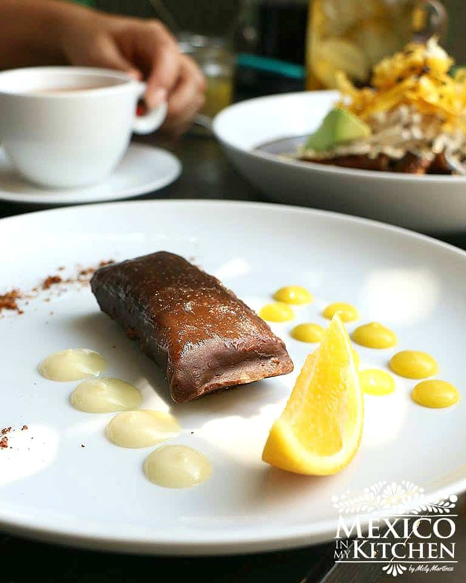

Tamales

Deliciosos tamales de chocolate, tienen un sabor sorprendente con una textura
como de un pan suavecito. Prueba esta receta única y sorprende tu familia con
unos tamales de chocolate calientitos.
Hoy, es un honor para mí tener al chef José Hernández como invitado en el blog
para compartir una de sus maravillosas creaciones: Tamales de Chocolate. Conocí
al chef Hernández en Instagram, donde comparte fotos de las comidas que sirve
en su restaurante "Yokot'an".
Ingridients
Para el relleno
- 2 tabletas de Chocolate Mexicano como el de la marca “Abuelita”, picadas.
- ¼ taza de agua caliente
- 4 cucharadas de cocoa en polvo
Para los tamales
- 3 barras o tabletas de chocolate mexicano picadas
- 13 cucharadas de 200 ml de agua caliente.
- 3½ tazas de Harina de Maíz para tortillas * 1 Kilo de Masa Fresca
- 3 tazas de agua tibia para la masa
- 10 cucharadas de aceite vegetal
- 1 cucharada de extracto de vainilla
- 2 tazas de azúcar morena 310 gramos
- 10 cucharadas de cocoa en polvo
- 1 pizca de sal
- 20 piezas de hojas de plátano de 6 x 6 pulgadas cada una ya suavizadas y limpias
Steps
- Coloca los trozos de chocolate en un recipiente de vidrio y luego vierta
el agua caliente. Mezcla bien con una batidora. Al principio, parecerá
que se está cuajando, pero si sigues batiendo, se convertirá en una
pasta suave.
- Ahora, agrega el polvo de cacao y siga batiendo hasta que adquiera una textura espesa y cremosa. Cubra el
recipiente con plástico y refrigera por 3 horas. Estará listo cuando se vea como yogur espeso.